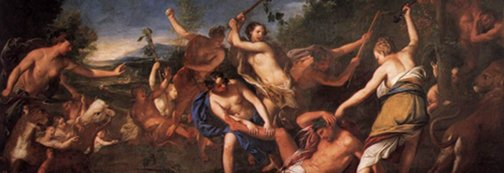

Platonic Bodies vs. Postmodern Bodies

PZwingli insisted that in the utterance ‘This is my body’ (Hoc est corpus meum) the existential word ‘is’ (est) was to be understood, not in a real, literal and corporeal sense, but only in a symbolical, historical or social sense (significat, symbolum est or figura est)… Zwingli had discovered or invented the modern concept of time in which every event was either spiritual and mental or corporeal and material but no event was or could be both at once… Spirit, word and sign had finally parted company for man at Marburg in 1529; and myth or ritual… was no longer literally and symbolically real and true. Cited in Algis Uždavinys, Philosophy as a Rite of Rebirth
lato’s conception of the body, as put forward in a number of texts, is not only a traditional conception of the body, but the quintessentially traditional conception that served as a basis for most later descriptions and analyses until at least the “Enlightenment”. Despite revisionary works that claim Plato to be the forerunner of any number of modern ideologies, Plato held essentially ancient views, which paralleled those of the Orphics, Hermetics, and Pythagoreans.
There are multiple minor views of what the body is as such, but only very few major views, which could be labeled as the Platonic body, Cartesian body, and the Foucauldian body, which correspond to the traditional (pre-modern), modern, and postmodern epochs. The way society and its individuals view the body impacts all other great questions, from the existence of God and meaning of life, to the ethics of genetic engineering. There may be no right answer as to which conception of the body is most correct, but it can be stated with certainty that the body is of utmost importance and that Platonic views, long neglected, should receive the attention they deserve.